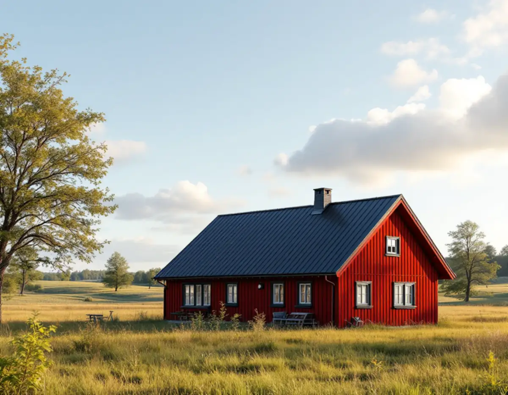
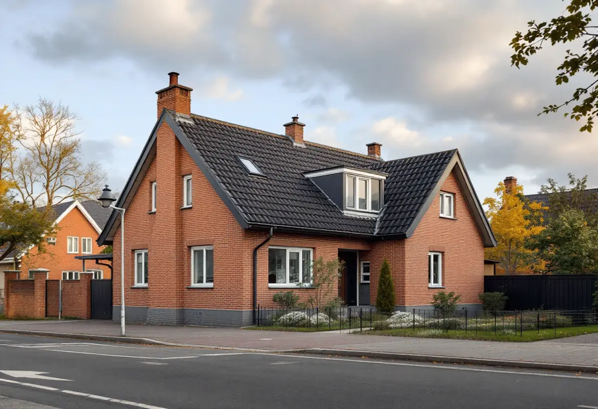

Takbyte i Södertälje
Byte av tegel-, betong- och plåttak.
Takbyte i Södertälje →
Södertälje kommun rymmer staden vid kanalen, stationsorterna Järna och Hölö och landsbygden i Enhörna och på Mörkö.
Skicka gärna en bild på taket.
Något blev fel. Kontrollera uppgifterna eller ring 08 12 410 276.
Vi tittar på jobbet på plats innan du får offert.
Du ser vad som ingår och vad det kostar.
Vi drar av ROT direkt och sköter ansökan.
Geal Entreprenad AB, Bromma. Org.nr 559303-7566.

Vi är takläggare i Södertälje för villor, radhus och fritidshus i bland annat Pershagen, Västergård, Blombacka, Järna, Hölö och Enhörna.
De äldsta villakvarteren är egnahemsområden från början av 1900-talet, där staden styckade gårdsmark i små tomter. Senare kom villaområdena i Järna och Hölö, där Hölö fick nya villakvarter under 1960–80-talen. Under 1960- och 70-talen byggdes dessutom stora bostadsområden i stadsdelar som Bårsta, Ronna, Saltskog, Geneta och Hovsjö, och i kommunens alla socknar tillkom fritidshusområden under samma period.
Sekelskiftshusen har ofta branta sadeltak och murade tegelskorstenar, medan efterkrigsvillorna har flackare tak. I sommarstugeområden som Sandviken i Enhörna har 1930-talets fritidshus flacka tak. Det gör att två villor på samma gata kan behöva helt olika lösningar. Vi utgår från det enskilda huset.
Mälaren, Hallsfjärden och Järnafjärden ger blåsiga lägen på många tomter. På bergknallar med tall samlas barr och mossa på taken. I Bergvik sluttar tomterna kraftigt ner mot Mälarens vatten, och där tar takfoten mer väder än i de inre kvarteren.
Oavsett om du behöver ett komplett takbyte eller en riktad renovering ger vi en tydlig bedömning och offert. Vi arbetar även i grannområden – se alla områden vi arbetar i.
På egnahemsvillorna är råsponten ofta original och har på sina ställen tagit fukt, särskilt kring skorstenen och vid takfoten. Gamla plåtbeslag runt tegelskorstenar är en vanlig läckkälla. Vid besiktningen lyfter vi därför på några pannor eller tittar in från vinden, eftersom underlaget sällan syns från marken.
På husen från 1950–70-talen är det oftare underlagspapp, läkt och fotplåt som tjänat ut. På flacka tak och pulpettak syns problemen först vid anslutningar mot vägg.
I sommarstugeområdena har många hus byggts till i etapper. Då möts olika takfall i vinklar som vatten gärna hittar in i, och vid ett takarbete gör vi om de anslutningarna så att hela taket fungerar som en enhet.
Bygglov hanteras av Södertälje kommun. Enligt kommunens sida om fasad- och takändringar krävs lov om huset ligger i ett kulturmiljöområde med utökad lovplikt; för vanliga en- och tvåbostadshus i övrigt är byte av takmaterial normalt lovfritt.
Är du osäker kan du ringa kommunens kontaktcenter på 08-523 010 00 innan du bestämmer material. Hur vi lägger upp en renovering beskriver vi under takrenovering i Södertälje.
Kommunens kulturmiljöinventering finns som delrapporter för Mörkö, Hölö, Järna, Enhörna, Vårdinge, Södertälje med omgivande land och stadskärnan. Där beskrivs bland annat Blombacka egnahemsområde, och den som äger ett hus i ett av de utpekade områdena bör kontrollera vad som gäller innan materialet byts.
Hölö växte fram som stationssamhälle kring järnvägen som öppnade 1913 och har i dag omkring 1 000 invånare. Enligt kommunens kulturmiljöinventering finns här villakvarter från 1900-talets andra hälft. Kring stationen byggdes på 1930-talet flerfamiljshus och små enskilda villor.
I Järna finns radhus i Södertuna från 1980–90-talen och nya områden med typhusvillor norr om tätorten. När ett radhustak från den perioden behöver ett takbyte är det ofta flera hus i raden som är i samma skick.
Äldre delar av Järna har egnahem från 1930–40-talen med flacka sadeltak och villor från 1960-talet med pulpettak väster om Åsgatan. De låga taken kräver täckning som klarar liten lutning, och anslutningar mot vägg och skorsten behöver göras med omsorg.
I Enhörna finns villabebyggelse främst vid Ekeby, och sommarstugeområden som Sandviken och Vattubrinken har delvis blivit permanentbostäder. Många av husen ligger i sluttningar ner mot Mälaren. Enligt kommunens kulturmiljöinventering har trycket på boende på landsbygden varit stort sedan slutet av 1900-talet, och vid Ekeby pågår en ständig utbyggnad.
När en sommarstuga blir åretruntbostad behöver taket ofta mer än ny täckning. Vi ser över vind och ventilation samtidigt, så att fukt från det uppvärmda huset inte samlas under yttertaket.
I Sandvikens södra del står fritidshus från 1960-talet på bergknallar i tallskog. Barren samlas i rännor och ränndalar, så efter ett takarbete rekommenderar vi regelbunden rensning och tillsyn av mossa.
Byte av tegel-, betong- och plåttak.
Takbyte i Södertälje →Riktade åtgärder som förlänger takets liv.
Takrenovering i Södertälje →Bedömning av skick inför beslut.
Takbesiktning i Södertälje →Nytt ytskydd på plåttak.
Takmålning i Södertälje →Skonsam tvätt och mossbehandling.
Taktvätt i Södertälje →Nytt plåttak och plåtarbeten.
Plåttak i Södertälje →Vi utgår från Bromma och tar uppdrag i hela Södertälje kommun, från stadskärnan till Hölö och Mörkö. Besök och etablering samordnar vi så att resvägen inte styr arbetet. Efter platsbesöket får du en tydlig bedömning och offert.
Läs mer om tak på villa eller jämför takbyte och takrenovering innan du bestämmer dig.
Vi arbetar även i Botkyrka.
Takläggare i Botkyrka →Vi arbetar även i Huddinge.
Takläggare i Huddinge →Vi arbetar även i Skärholmen.
Takläggare i Skärholmen →Eller ring 08 12 410 276, mån–fre 08–17.
Skicka gärna en bild på taket.
Något blev fel. Kontrollera uppgifterna eller ring 08 12 410 276.